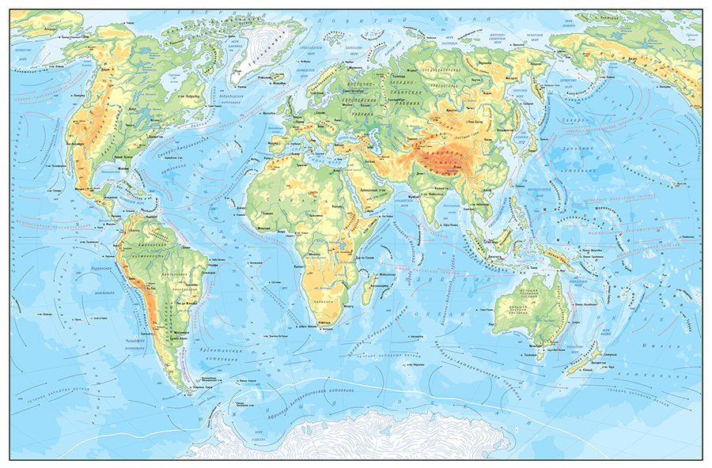
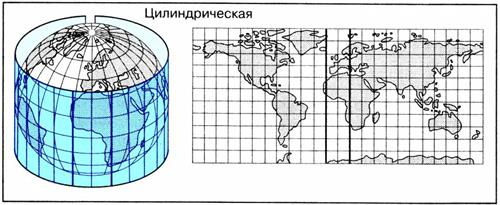
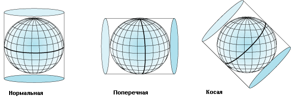
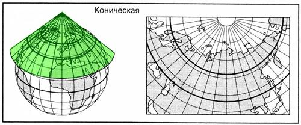
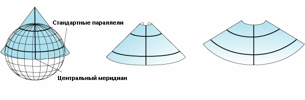
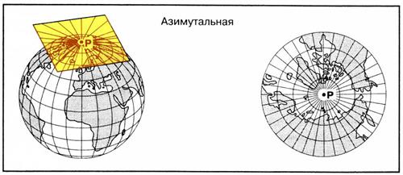
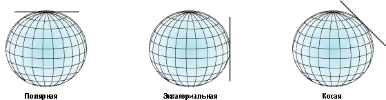

Географическая карта - уменьшенное, обобщенное, математически определенное, образно-знаковое изображение земной поверхности на плоскости, показывающее размещение, состояние и связи различных природных и общественных явлений, отбираемых и характеризуемых в соответствии с назначением каждой конкретной карты.

Картографические проекции
Картографическая проекция – это математически определенный способ изображения поверхности эллипсоида на плоскости, устанавливающий аналитическую зависимость между географическими координатами точек земного эллипсоида и прямоугольными координатами тех же точек на плоскости.
Цилиндрические проекции

Цилиндрическими называют проекции, в которых сеть меридианов и параллелей с поверхности эллипсоида переносится на боковую поверхность касательного или секущего цилиндра, затем цилиндр разрезается по образующей и развертывается в плоскость. В зависимости от ориентировки цилиндра относительно земной оси различают проекции:
Нормальные - когда ось цилиндра совпадает с малой осью земного эллипсоида. Сетка: меридианы представляют собой равноотстоящие друг от друга параллельные прямые линии; параллели – прямые, перпендикулярные меридианам. Линия нулевых искажений – экватор. Поэтому в этих проекциях строят карты территорий, вытянутых вдоль экватора, или карты мира.
Поперечные - когда ось цилиндра лежит в плоскости экватора (т. е. перпендикулярна малой земной оси). Линия нулевых искажений – меридиан касания. Сетка: параллели и меридианы – кривые линии.

Косые - когда ось цилиндра составляет с осью эллипсоида острый угол. Линия нулевых искажений – линия касания цилиндра и эллипсоида. Сетка: параллели и меридианы – кривые линии.
Проекции, построенные на касательном цилиндре, имеют одну линию нулевых искажений, а проекции, построенные на секущем цилиндре, – две линии нулевых искажений.
Конические проекции

Конические - проекции, в которых сеть меридианов и параллелей с поверхности эллипсоида переносится на боковую поверхность касательного или секущего конуса, затем конус разрезается по образующей и развертывается в плоскость. В зависимости от ориентировки конуса относительно земной оси различают проекции:
Нормальные - когда ось конуса совпадает с малой осью земного эллипсоида. Сетка: меридианы представляют собой прямые линии, расходящиеся из вершины конуса; параллели – дуги концентрических окружностей. Линия нулевых искажений – любая параллель касания, кроме экватора. Поэтому в этих проекциях строят карты территорий, вытянутых вдоль параллели касания. Например, карты России.
Поперечные - когда ось конуса лежит в плоскости экватора (т. е. перпендикулярна малой земной оси). Линия нулевых искажений – меридиан касания. Сетка: параллели и меридианы – кривые линии.

Косые - когда ось конуса составляет с осью эллипсоида острый угол. Линия нулевых искажений – линия касания. Сетка: параллели и меридианы – кривые линии.
Два последних вида проекций употребляются очень редко. Проекции, построенные на касательном конусе, имеют одну линию нулевых искажений, а проекции, построенные на секущем конусе, две линии нулевых искажений
Азимутальные проекции
Азимутальными называют проекции, в которых сеть параллелей и меридианов переносится с поверхности эллипсоида на касательную (или секущую) картинную плоскость. Точка касания плоскости и земного эллипсоида является точкой нулевых искажений. В зависимости от положения точки касания, среди азимутальных проекций различают простые:
Полярные (нормальные) - когда плоскость касается земного эллипсоида в одном из полюсов. Сетка: параллели – концентрические окружности с центром в точке полюса; меридианы – прямые линии, радиусы этих окружностей. Используются для построения карт Антарктиды и Северного Ледовитого океана.
Экваториальные (поперечные) - когда плоскость касается эллипсоида в любой точке на экваторе. Сетка: средний меридиан и экватор − взаимно перпендикулярные прямые линии, остальные параллели и меридианы – кривые линии (иногда параллели изображаются прямыми линиями). В этих проекциях строят карты полушарий и Африки.

Горизонтальные (косые) - когда плоскость касается эллипсоида в какой-либо точке, лежащей между полюсом и экватором. Сетка: средний меридиан, на котором расположена точка касания, – прямая линия; остальные меридианы и параллели – кривые линии. Эти проекции используются при построении карт материков, когда точка нулевых искажений находится в центре изображаемого материка
Дистанционное Зондирование Земли
Дистанционное зондирование Земли (ДЗЗ) — наблюдение поверхности Земли наземными, авиационными и космическими средствами, оснащёнными различными видами съемочной аппаратуры. Рабочий диапазон длин волн, принимаемых съёмочной аппаратурой, составляет от долей микрометра (видимое оптическое излучение) до метров (радиоволны).
Виды космической съемки
Для выполнения съемок запускаются различные по назначению спутники с разнообразными съемочными системами. Из систем, предназначенных для съемок из космоса, наиболее перспективными признаются оптико-электронные многозональные стереосканеры и радиолокаторы с синтезированной длиной антенны.
По технологии съемки и с учетом используемого спектрального диапазона различают:
фотографическую (черно-белую, цветную, спектрозональную) съемку в видимом и ближнем инфракрасном диапазоне.
сканерную (оптико-механического и оптико-элекгронного сканирования) съемку в видимом и ближнем инфракрасном диапазоне.
тепловую инфракрасную съемку.
микроволновую радиометрическую съемку.
радиолокационную съемку.
Многозональная съемка обычно выполняется одновременно в 3 — 7 узких спектральных зонах видимого и инфракрасного диапазона и иногда сочетается со съемкой в панхроматической зоне для получения снимков наиболее высокого пространственного разрешения. Сканеры с ПЗС-матрицами позволяют увеличить число спектральных зон до нескольких сотен (гиперспектральная съемка). При радиолокационной съемке многозональный принцип реализуется использованием нескольких длин радиоволн (частот) СВЧ-диапазона (многочастотная съемка) и разнрй поляризации зондирующего излучения (поляризационная съемка).
Детальные стереоскопические снимки, получаемые с космических высот длиннофокусными оптико-электронными сканерами, оказались пригодными для метрической характеристики рельефа земной поверхности, представляемой в виде изолинейных карт или цифровых моделей рельефа.
При работе со снимками в первую очередь важны спектральный диапазон съемки, который определяет биогео-физические характеристики объектов, передаваемые снимками, и технология получения изображения, от которой зависят изобразительные, радиометрические и геометрические свойства снимков. Эти две характеристики представляют основу классификации космических снимков, учитывающей возможности их географического дешифрирования.
Способы изображения рельефа
Изображение рельефа принадлежит к старейшим и неизменно актуальным проблемам картографии. Если рассматривать эту задачу как моделирование неровностей земной поверхности в плоском двухмерном изображении, то для этого удобен один из видов изолиний - горизонтали (изогипсы), позволяющие определять третью координату - высоту в любой точке этой поверхности. На тематических картах возникает необходимость и в других количественных показателях, например горизонтальной и вертикальной расчлененности рельефа, для чего пригоден способ количественного фона. Для качественных характеристик рельефа, например его генезиса, используется способ качественного фона. Казалось бы, дело ограничивается конкретным применением рассмотренных способов изображения. Однако часто ставят особую задачу - достижение зрительного эффекта объемности, глубины плоского изображения, когда при взгляде на карту у читателя создается наглядное представление о формах и расчлененности рельефа.
Вообще два основных требования предъявляются к плоскому изображению рельефа: во-первых, его измеримость, т. е. возможность определения по карте абсолютных высот и относительных превышений точек местности, направления и крутизны скатов, объемов и других количественных показателей рельефа; во-вторых, пластичность изображения, т. е. выразительность объемных форм рельефа, иллюзия его выпуклости и глубины. На картах разного назначения и тематики реализация и соотношение этих требований неодинаковы. Исторически они определялись условиями времени - уровнем знаний, технических возможностей и особенностями практического использования карт.
Поиски пластики изображения влекли разработку специальных средств ее передачи. На ранних этапах развития картографии прибегали к перспективному рисунку рельефа, но даже в наиболее совершенном выполнении картинное изображение оказывалось произвольным и лишенное математической основы не позволяло каких-либо определений крутизны скатов и высот.
С начала XIX в. вошли в употребление пластические способы, основанные на принципах отвесного и косого освещения рельефа, а со второй его половины - математически строгий способ изолиний (горизонталей), теперь часто дополняемый цветовыми и светотеневыми приема ми повышения их наглядности. Позднее, уже в текущем столетии был предложен ряд приемов картографического моделирования на стереоскопическом принципе, при котором плоские изображения способны давать полную пространственную имитацию рельефа.
Наконец, к плоским изображениям рельефа принадлежат блокдиаграммы - перспективные изображения земной поверхности при наклонном луче зрения, обычно сопряженные с разрезами земной оболочки.
Особый вид картографического представления земной поверхности образуют и трехмерные изображения - рельефные модели местности и рельефные глобусы.
Внедрение в картографию ЭВМ и автоматики открыло новые возможности совершенствования традиционных и изыскания новых методик изображения рельефа, основу которых образует автоматизированная обработка его цифровых моделей рельефа. Вообще проблема передачи рельефа богата примерами диалектического развития - обращения к прежним идеям, снова используемым, но уже в обогащенном виде на современном уровне техники.
 Детальные стереоскопические снимки, получаемые с космических высот длиннофокусными оптико-электронными сканерами, оказались пригодными для метрической характеристики рельефа земной поверхности, представляемой в виде изолинейных карт или цифровых моделей рельефа.
Детальные стереоскопические снимки, получаемые с космических высот длиннофокусными оптико-электронными сканерами, оказались пригодными для метрической характеристики рельефа земной поверхности, представляемой в виде изолинейных карт или цифровых моделей рельефа.